Вітальня · журнал «ДентАрт» 2023 №4
Анжеліка Якимець: «Тільки обмінюючись досвідом, ми можемо створити щось краще»
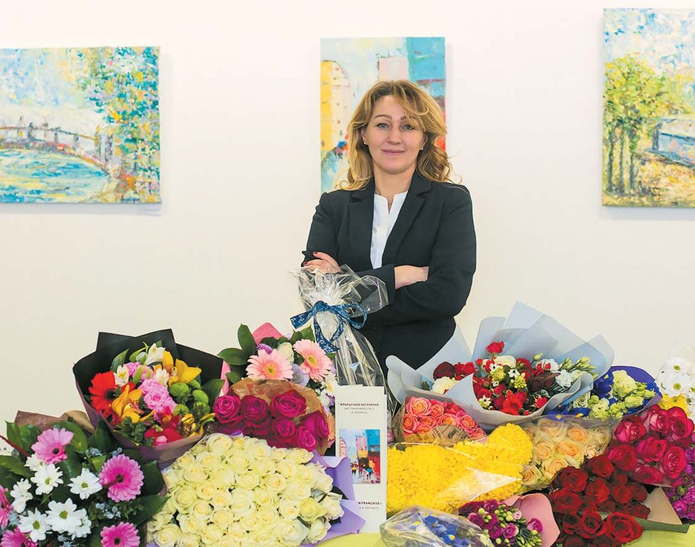
Сьогодні гостя Вітальні журналу «ДентАрт» — українська лікарка-ортодонтка із 30-річним стажем Анжеліка Вікторівна Якимець, котра нині у Сорбонні (Париж, Франція) засвоює принципи європейської школи ортодонтії, щоб, повернувшись в Україну, поділитися знаннями з колегами-співвітчизниками. Керуючись цією благородною метою, вона у співавторстві з Іриною Скрипник та Дмитром Лепорським уже написала і видала практичний посібник «Цифрові та клінічні протоколи використання ортодонтичних елайнерів». Анжеліка Якимець — президентка новоствореної Європейської асоціації українських лікарів-стоматологів. А ще вона талановита художниця, її виставки картин бачили не лише в Києві, а й у Парижі, Брюсселі. Тож наша розмова — про стоматологію і мистецтво, про Україну і світ…
Мета перебування у Франції — засвоїти якомога більше знань, щоб ними поділитися з колегами в Україні
— Бонжур, шановна пані Анжеліко! Для початку уточнимо дещо про Ваш сьогоднішній статус… Як Ви потрапили до Франції, чому саме ця країна стала місцем Вашої професійної активності?
— Добридень, пане Сергію! Про себе: я лікар-ортодонт із 30-річним стажем, доцент, кандидат медичних наук (DDS, MSc, PhD Specialiste qualifiee en orthodontie, President de l’Association Europeenne des Medecins Dentistes Ukrainiens), нині я — майстер стоматології у спеціалізованому відділенні шпиталю Ротшильда, на кафедрі з вад розвитку щелепно-лицьової ділянки факультету стоматології Університету Парижа (Університети Сорбонни). На факультеті одонтології, тобто стоматології, є окремий напрямок — вади розвитку щелепно-лицьової ділянки. І я на кафедрі — майстер санте (Sante французькою — це здоров’я).
Раніше я працювала завучем кафедри ортодонтії Академії післядипломної освіти імені П. Л. Шупика — із січня 2008 року до лютого 2020-го (кафедра була створена 15 грудня 2007 року).
— Ви у Франції тимчасово чи залишитеся там працювати?
— Ні, я тимчасово, мета перебування тут — навчання. Чому? В Україні останніми роками набирає обертів сучасний напрямок стоматології — постура і гнатологія. І я шукала університет, де була б така програма. Тому що на конференціях можна засвоїти те, що на поверхні, а хочеться знати глибше.
Наш молодший син навчався у французькій школі «Lycee français Anne de Kiev», тож щоб допомагати йому в оволодінні французькою мовою, я теж оволоділа нею на певному рівні, вищому, ніж була моя англійська (отримала сертифікат B2).
І я знайшла програму, яка мене цікавила, в Університеті Бордо: постурологія для стоматологів. Подала заявку, і мене взяли — завдяки рівню знання мови В2. Так я отримала диплом цього університету за фахом постурологія і остеопатія для стоматологів. Я єдина з пострадянського простору його здобувала, це був передостанній випуск таких спеціалістів, нас було 21 — 11 стоматологів і 10 остеопатів. Професорка на першій лекції повідомила, що з нашим випуском 2019–2020 років таких дипломів у Європі буде 88. Був ще один випуск спеціалістів під час Сovid. А потім Університет Бордо більше не набирав на цю спеціалізацію, тому що пішла на пенсію головна фахівчиня, професорка, яка слухала лекції ще самого Костена. На сьогодні дипломів з такої спеціальності налічується не більше 110.
А чому я обрала французьку школу постурології для стоматологів? У нас в Україні у цій сфері є таке, можна сказати, занурення в американську школу, європейську школу ортодонтії ми знаємо гірше. А тим часом перша школа остеопатії була започаткована саме у Франції. Потім був період, коли вона про себе активно не заявляла, і її учні поїхали в Канаду і Сполучені Штати. Але нині ми вже вивчаємо напрацювання французьких остеопатів, знаємо, приміром, про синдром Костена (Костен за фахом був отоларингологом), про те, що сучасні досягнення остеопатичних і гнатологічних шкіл США і Канади базуються на французькій школі. І центр цієї остеопатичної школи — у Бордо, тому я там і навчалася.
Під час навчання я зрозуміла, що є велика різниця в принципах додипломної і післядипломної освіти ортодонтів в Україні і Франції. Бо у нас ще залишилося багато чого від радянської системи викладання. До Болонської системи ми переходимо, але повільно.
— Перейшли формально, змінилася більше зовнішня оболонка.
— У тому то й річ. Відтак я мала бажання ще поглибити свої знання і навички, щоб потім цим досвідом поділитися з українськими колегами. Вступила на навчання на факультет ортодонтії Університету Сорбонни…
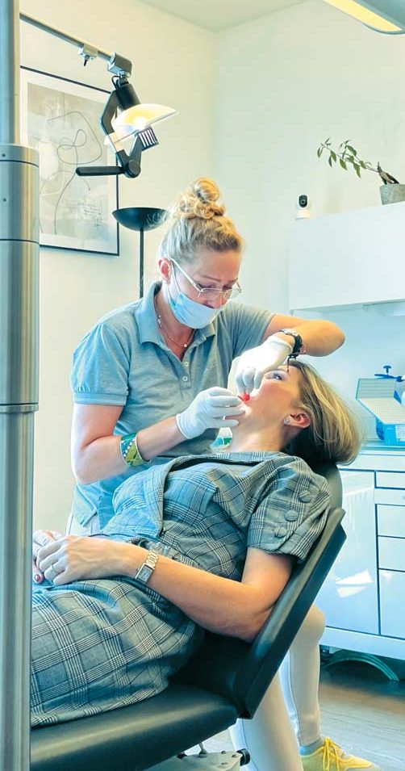
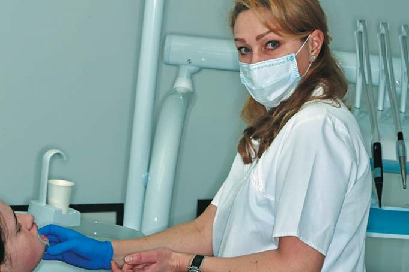
Дитяча мрія виявилася сильнішою…
— Повернімося до початку Вашого професійного шляху. Стоматологія — це професія, яка вимагає не тільки мудрої голови і вмілих рук, але й гарячого серця, тобто слід мати щире покликання… Анжеліко, а як Ви стали стоматологом?
— Стоматологом я стала волею випадку. Коли була маленька, мріяла стати лікаркою. А коли закінчувала школу, то вже мала намір стати перекладачкою. Але в Університет Шевченка з першого разу вступити не вдалося — не вистачило одного бала. Нічого, думаю, вступлю наступного року. І я пішла працювати, та не куди-небудь, а до шанованого нині професора Володимира Семеновича Процика у відділення голови і шиї в Інституті онкології. 9 листопада 1987 року почала працювати санітаркою, а вже у січні 1988-го стояла в операційній і асистувала шановним Олександрові Михайловичу Трембачу та Сергію Сергійовичу Александрову… І так я пропрацювала до початку вступної кампанії у вузи і вступила в медінститут у Києві. Як бачите, дитяча мрія виявилася сильнішою за підліткові прагнення…
— А чому обрали стоматологічний факультет?
— Хотілося бути хірургом, а лише на стоматологічному факультеті навчали на щелепно-лицьових хірургів.
Поєднання функції та естетики — це і є ортодонтія
— Стоматологія різноманітна у своїх шляхах стабілізації стоматологічного здоров’я пацієнтів. Чому в стоматології Ви обрали саме ортодонтію? Коли це сталося? Не на першому ж курсі…
— Усі роки, доки навчалася в інституті, я проходила практику у тому ж відділенні голови і шиї Інституту онкології, а з третього курсу пішла в гурток з ортодонтії, який вела шановна Галина Іванівна Лютик (Царство Небесне її душі). Мені було дуже цікаво. Я тоді зрозуміла, що справжня ортодонтія — це немов верхівка трикутника чи піраміди, це вінець стоматології. Замість того, щоб відразу видаляти зуби, ставити імпланти, протезувати, слід відновити функцію, а потім уже братися за естетику. Поєднання функції та естетики — це і є ортодонтія. І вона у моєму житті вже понад 30 років.
Взагалі мені дуже пощастило з учителями і наставниками: професори Галина Федорівна Білоклицька, Мирослава Стефанівна Дрогомирецька, Ірина Петрівна Мазур, Любов Вікентіївна Смаглюк — це фахівці, котрі живуть професією, навчають, дають поради і підтримують. Пощастило мені зустріти на професійному шляху таких справжніх друзів-колег та однодумців, як Ірина Скрипник, Дмитро Лепорський, Олена Дорошенко і ще багато інших. Я безмежно вдячна всім за те, що вони вклали в мене як лікаря-ортодонта і науковця.
— Прикус і постура тісно взаємопов’язані. Але для стоматологів, зокрема ортодонтів, це може бути модним захопленням… Чи існує цей зв’язок у реальності, як Ви його виявляєте?
— Вони взаємопов’язані, і саме ортодонтія і постурологія — дуже тісно поєднані спеціалізації, науки. Це справді так, бо від прикусу до п’яти чи від п’яти до прикусу є низхідні і висхідні проблеми. Порушення у постурі спричиняють різні аномалії прикусу, також є аномалії прикусу, які породжують проблеми в постурі. І щоб розібратися в цьому, потрібно мати сучасні знання і відповідну матеріально-технічну базу. Це першооснова для того, щоб отримати успішні результати лікування. Розібратися, в чому проблема, і лікувати не наслідки, а причину. Тому діагностика і ще раз діагностика!
— Причиною можуть бути збої в організмі, і треба організм лікувати…
— Аномальний прикус — це може бути скелетна аномалія, генетично зумовлена, і вона буде вести до проблем з постурою, хребтом, також аномалії розвитку можуть бути від функції, тому що ріст та розвиток і функція — взаємозалежні. Ріст залежить від функції, функція залежить від росту. Скелетна аномалія — механізм, що викликає проблеми і в постурі. Якщо це проблеми у функції, тобто в наявності парафункції, то вони провокують проблеми у постурі та оклюзії. З цим і треба розбиратися, і для цього застосовуємо ортогнатичні і постурологічні проби, щоб зрозуміти, у чому ж все-таки корінь зла — це скелетна аномалія, чи аномалія від функції, чи дентоальвеолярна аномалія, як ми кажемо.
У Франції, наприклад, до переліку обов’язкових досліджень ортодонтичного пацієнта входить аналіз Делєра. Цей телерентгенографічний аналіз використовують у своїй роботі ортогнатичні хірурги, остеопати та ортодонти для розуміння архітектури черепа пацієнта і усвідомлення, в якому напрямку слід вести лікування.
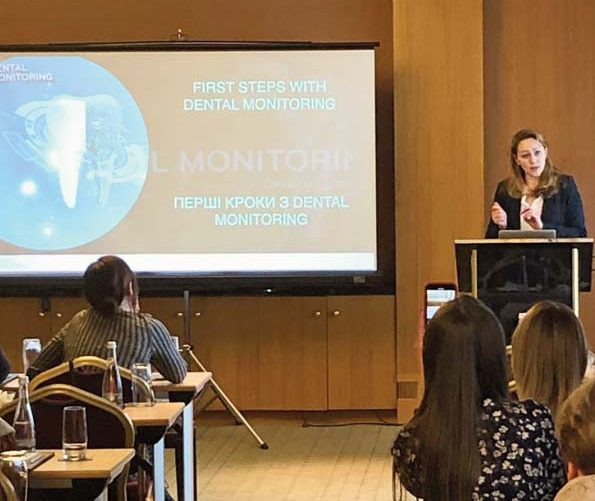
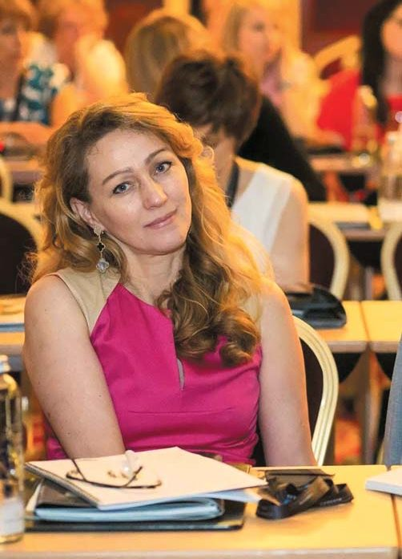
Інтернатура у Франції — нагорода для лікарів, котрі найкращі
— Те, що французька школа постурології, зосереджена в Бордо, «пішла на пенсію», не позначилося негативно на освіті ортодонтів?
— Ні. Програми з постурології є в Сорбонні, інших університетах. А Бордо — це як колиска остеопатичної школи. Тому й було цікаво навчатися там. Можна було пройти навчання за схожими програмами, але це вже було б трішечки по-іншому.
Щоб отримати диплом університету у Франції, потрібно зробити наукове дослідження, написати роботу мінімум на 35 сторінок і презентувати її перед поважною комісією. І ще скласти письмовий іспит. Тобто не так просто тут отримати диплом університету зі спеціальності.
— Це майже як кандидатська дисертація…
— Трохи менше, бо не треба робити досліджень на щурах чи мишах. Але справді — майже кандидатська. І ти маєш цю роботу написати за навчальний рік. У тебе немає трьох років, як на кандидатську дисертацію. Ти мусиш опрацювати дуже багато літератури, а з темою цієї магістерської роботи повинен визначитися уже на другому занятті, у січні, і маєш 9 місяців для роботи.
— Навчаючись і працюючи у Франції, Ви мимоволі маєте порівнювати організацію стоматології і власне ортодонтії у Франції і в Україні. Що, на Вашу думку, є спільне і в чому відмінності?
— Спільне те, що так само рекомендується проходити перший ортодонтичний огляд пацієнта у 7 років, далі так само виокремлюються ортодонтія дитяча і доросла. Ортодонтична допомога дорослим складніша, вона вимагає специфічних знань, і її можуть надавати лише досвідчені спеціалісти.
Щодо відмінностей в організації цієї допомоги, то стати ортодонтом у Франції і мати право повісити на своєму кабінеті табличку, що ти лікар-ортодонт, можна лише після навчання в інтернатурі з ортодонтії.
А профілактичною ортодонтією можуть займатися всі лікарі-стоматологи. Маються на увазі капи-трейнери чи апарати з нормалізації функції ковтання — тобто профілактика у дитячому віці, до появи постійних зубів.
Щоб стати кваліфікованим ортодонтом, маєш пройти 3 роки навчання в інтернатурі або на спеціалізованому курсі. Інтернатура у Франції — як нагорода для лікарів, котрі найкращі. Наприкінці п’ятого курсу студенти складають дуже важкий іспит, і тільки ті, що набрали кількість балів, більшу, ніж 16 із 20-ти можливих, мають право навчатися в інтернатурі. Наприклад, Університет Парижа приймає в інтернатуру з ортодонтії не більше, ніж 6-7 осіб щорічно. Вони навчаються три роки, за навчання не платять, держава виплачує їм зарплату як лікарям, бо вони проходять практику у шпиталях.
Чому рівень надання допомоги у шпиталях Франції такий високий? Тому, що там можуть працювати тільки кращі з найкращих, туди не беруть тих, хто просто закінчив університет.
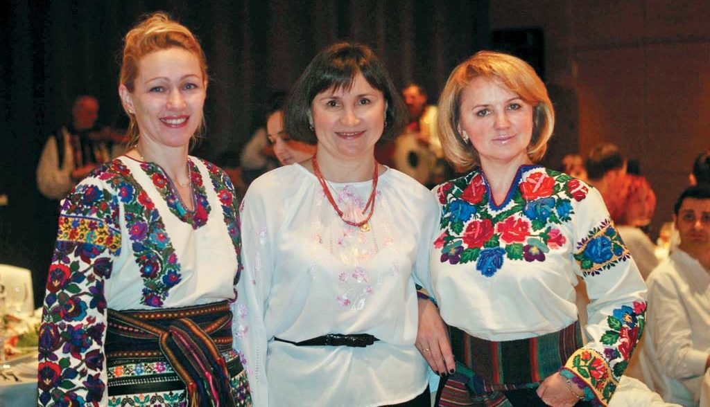
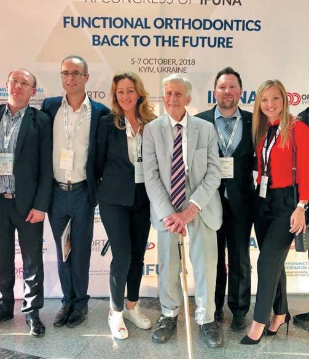
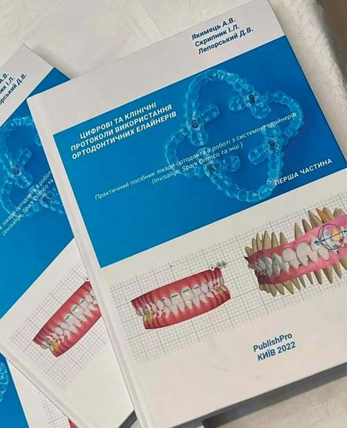
Об’єднати всіх українських стоматологів, котрі працюють як на теренах України, так і в країнах Євросоюзу
— За Вашим авторством побачила світ книга, присвячена цифровим та клінічним протоколам використання ортодонтичних елайнерів. Для чого протоколи стоматологам, зрозуміло, адже працювати за ними легше. А чим клінічні протоколи допомагають пацієнтам?
— Протоколи створені для полегшення праці лікаря. І для пацієнта — щоб він отримав те, за чим прийшов до лікаря. Наша книга протоколів написана за принципом хрестоматії: для того, щоб отримати такий-то результат, можливі такі шляхи… Це довідник, практичний посібник для ортодонтів, котрі використовують ортодонтичні елайнери у своїй практиці, щоб лікар нічого не забув, не зробив якусь помилку, котра виявиться пізніше. Він особливо стане у пригоді лікарям-ортодонтам, котрі тільки почали працювати з елайнерами: засвоївши цю інформацію, вони можуть стати справжніми майстрами своєї справи. Ті лікарі, які працюють з елайнерами не кожен день, тобто менше, ніж брекет-системою, можуть щось підзабути, і тоді наш посібник зможе допомогти їм у роботі.
Книжка написана завдяки рокам навчання в Сорбонні, де був курс з лікування елайнерами та ортодонтичного прийому виключно на елайнерах. І це такий синтез знань і програм, які я засвоїла тут, у Франції, для того, щоб полегшити роботу нашим стоматологам, котрі працюють з елайнерами. Це підручник, створений з метою підвищення рівня праксеологічної компетентності магістрів стоматології, інтернів, ортодонтів.
В Україні не було раніше жодного посібника про лікування елайнерами, наш з Іриною Скрипник та Дмитром Лепорським перший. Він був затверджений вченою радою Університету імені О. О. Богомольця як навчальний посібник для студентів, лікарів-інтернів стоматологічних факультетів вищих медичних навчальних закладів ІІІ і ІV рівнів акредитації та лікарів-ортодонтів.
— Дивлячись зараз на українську стоматологію трохи збоку і будучи президенткою новоствореної Європейської асоціації українських лікарів-стоматологів, якою Ви бачите діяльність вашої асоціації для потреб українських стоматологів?
— Мета створення Європейської асоціації українських лікарів-стоматологів полягала в тому, щоб об’єднати всіх українських стоматологів, котрі працюють як на теренах України, так і в країнах Євросоюзу, для того, щоб організовувати спільні конференції, конгреси для обміну досвідом роботи: принести в Україну прогресивні напрацювання колег з інших країн, це по-перше, а по-друге, обмінюватися протоколами. Бо тільки обмінюючись досвідом і знаннями, ми можемо створити щось краще. Те, чого ми варті і чого варті наші пацієнти.
Коли у вересні 2022 року ми з Іриною Скрипник, віцепрезиденткою АСУ, презентували у Женеві на конференції FDI наш посібник, тоді й з’явилася ідея створення Європейської асоціації українських лікарів-стоматологів. Ми обговорювали її з президенткою АСУ Іриною Мазур. Ірина Скрипник є співзасновницею та віцепрезиденткою нашої асоціації. Створення такої асоціації актуальне в цей важкий для українців період, коли багато наших лікарів з тимчасово окупованих рашистами та прифронтових територій не за своїм бажанням опинилися за кордоном і мають якось виживати, працювати.
На жаль, не всі країни Європи дають можливість нашим лікарям працювати за фахом. Систему можна змінювати, коли ми разом і коли нас багато. Якщо в одній країні так, а в другій інакше, то від імені Асоціації можемо звертатися, домагатися поліпшення, щоб визнавали наші дипломи, давали можливість навчатися.
У Франції наші лікарі-стоматологи, подавши досьє, можуть вступити на четвертий чи третій курс університету — залежно від того, який рівень знань вони презентують комісії. Головне — нашим стоматологам не треба здавати іспити за 1 курс (я не кажу про тих, хто не знає французької, потрібний рівень знання мови В2). 4 і 5 курс — два роки навчання, а 6 курс — це практика у шпиталі. На 4–5 курсах 2 дні на тиждень — шпиталь, а в інші дні 1–2 пари, тобто можна ще трішечки підпрацьовувати.
Моя мета перебування у Франції — якомога більше взяти інформації, якомога більше засвоїти знань для того, щоб ними поділитися з колегами в Україні. Раніше ми не знали напрацювань французьких чи австрійських університетів, а нині доступ до них є. А коли така можливість існує, то треба об’єднуватися. Якщо активно працюють організації української діаспори, то чому не можуть діяти діаспорні організації українських стоматологів?
До речі, почалася наша діяльність під покровом Святої Аполлонії: перше засідання засновників Європейської асоціації українських лікарів-стоматологів відбулося 14 січня 2023 року, а напередодні Дня стоматолога ми отримали офіційне свідоцтво. Зареєстрована асоціація в Парижі, а об’єднує, як я вже говорила, стоматологів України і діаспори. Ми тепер можемо проводити міжнародні конференції, курси навчання, майстер-класи…
— Тобто повернулися до першоджерела, поскільки саме парижанин П’єр Фошар вважається засновником наукової стоматології. І з його легкої руки Свята Аполлонія стала покровителькою стоматологів…
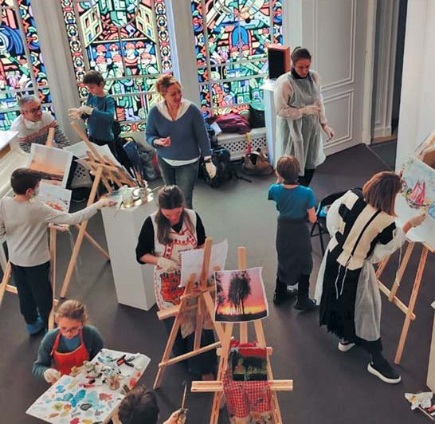
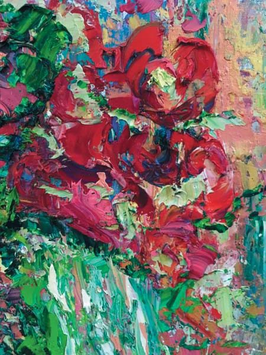
Малювання — це завжди позитив і сплеск емоцій…
— Анжеліко, Вас добре знають не лише як стоматологиню, ортодонтку, але і як художницю! Персональні виставки в Парижі, арт-сторінка із «Жоржинами» в нашому журналі і потім неймовірний аукціон на користь Збройних Сил України в Києві… Ми говорили з Вами про шлях у медицину, тож поговоримо і про шлях у мистецтво… Коли Ви відчули в собі покликання до живопису?
— У мене малював дядько, малював мій дід… Мені хотілося навчитися малювати ще в дитинстві, але якось тоді не складалося. Та одного дня я вирішила, що все-таки спробую. Знайшла у Фейсбуці оголошення: коли ви хочете спробувати сили в малюванні, приїздіть в артстудію на Республіканському стадіоні. Коштували заняття небагато, можна було спробувати. І все ж я вагалася, і тоді мій чоловік мене запитав:
— Що ти ходиш і все щось думаєш? Піди вже в ту артстудію і спробуй!
Я відповіла, що коли спробую і в мене не вийде, то що ж буду потім робити — я ж перейматимуся-страждатиму з цього приводу!
І мій чоловік Сергій сказав геніальну фразу, за що я йому дуже вдячна:
— Якщо не вийде, про це ніхто не дізнається, крім тебе і мене, а якщо вдасться, про це дізнаються всі…
Напророчив… Так і сталося.
— У Вашому житті тепер поєднуються ортодонтія і живопис, проте це дві стресогенні протилежності. Що з них генерує стрес, а що його нівелює?
— Насправді ні ортодонтія, ні живопис для мене стрес не генерують. Чому? Тому що ортодонт ставиться до пацієнта, як до полотна: коли ми лікуємо пацієнта, хочемо зробити все естетично, красиво. Щоб форма обличчя співпадала з формою зубів, щоб усе було функціонально, гармонійно… Тому ми, ортодонти, такі, як художники, у своїй роботі з пацієнтами. Тільки єдине треба пам’ятати: коли ми лікуємо пацієнтів, наші похибки можуть призводити до дуже великих проблем, навіть якщо це похибка на 1 міліметр чи пів міліметра.
Як на мене, то найбільш стресова ситуація — це коли складаєш іспити письмово в університеті французькою мовою.
Коли ж ми підходимо до полотна, то можемо не рахувати ті міліметри, а взяти шпатель і на полотні відтворювати те, що у нас викликає позитивні емоції. Для мене живопис — цілковитий релакс. Малюючи, ні про що інше не думаю, тільки про те, який колір чи який шар тієї чи іншої фарби маю покласти, щоб це було гарно. Коли я малюю, для мене це завжди позитив і сплеск емоцій, і я малюю тільки за покликом душі, коли хочу чимось із людьми поділитися. Це і є імпресіонізм. Техніка, в якій я малюю, — це враження. Ось мені щось сподобалося, щось дивовижне побачила — і потім це відтворила на полотні.
Тож у моєму випадку стоматологія і живопис одне одному допомагають. Якщо ти впевнений у своїх знаннях, знаєш протоколи лікування, то консультація чи лікування пацієнта не викликають жодного стресу; нині для мене вже немає різниці, консультація пацієнта французькою мовою чи українською.
Єдине, коли може виникнути стресова ситуація, — це коли у пацієнта такий темперамент, характер, що важко второпати, що він хоче. Ти йому намагаєшся озвучити план лікування, а він його не розуміє і розуміти не хоче. У такому випадку краще не брати на лікування цього пацієнта. Ортодонтія — це не швидка допомога, не ургентна хірургія, не гнійний апендицит, коли лікарська допомога має бути негайною. Ніхто ще від кривих зубів не помирав…
— І часто Вам доводилося відмовляти пацієнтам?
— За мою 30-річну практику я відмовила трьом пацієнтам.
— Ну, тут можна довго говорити, бо нове ставлення людей до краси часом доводить до таких кульбітів, що просто розводиш руками. Особливо коли накачують філером губи, а потім кажуть: моїх зубів не видно, зробіть щось…
— Саме так. «Зуби маленькі, збільшіть мені зуби!». Щоб прикус був, як у кроля? Часом пацієнти не розуміють, чого вони вимагають…
— Ортодонтія базується на функції, а функцію нерідко придушують у косметології, користуючись ботулінотерапією. Чи були у Вас такі пацієнти, які після ін’єкцій ботоксу намагалися цю функцію нормалізувати?
— У моїй практиці був випадок, коли інший ортодонт пропонував ортогнатичну хірургію, а я, провівши діагностику, сказала, що ми можемо впоратися без хірургії, і лікувала пацієнтку тільки ортодонтично. А потім для того, щоб трішечки поправити навіть не м’язи, а тільки платизму — м’яз, який тягне все, — пацієнтці було запропоновано ботулінотерапію протягом двох років з проміжком 6–9 місяців, тому що ми вирівняли зуби, створили гарну усмішку, правильний прикус, але пацієнтка втратила була 10 кілограмів ваги, і пружність її м’язів та шкіри змінилася. Вона скористалася послугами косметолога згідно з нашими рекомендаціями і була дуже задоволена результатом. Це була така підтримуюча терапія — для того, щоб м’язи і шкіра змогли підтягнутися натуральним, природним чином. Більше таких випадків у моїй практиці поки що не було.
Хай збудеться головна наша мрія — про Перемогу!
— Як Ваша родина підтримує Вас на шляху в ортодонтії і мистецтві?
— Старший син Микита, йому 31 рік, — лікар-стоматолог. Особливо розуміється в пародонтології та ортодонтії.
— О, то він уже досвідчений лікар-стоматолог!
— Я вважаю досвідченими тих, хто пропрацював мінімум 10 років. В ортодонтії головне — це логічне мислення. Якщо його немає, ортодонтом бути неможливо. А логіка — це запорука всього, і успішного результату передусім. Мультидисциплінарний підхід — це логіка…
Наш молодший син, 16-річний Яніслав, навчається у передостанньому класі ліцею тут, у Франції, і він так само обрав медицину.
— Скажіть, Анжеліко, на що Ви сподіваєтеся у цьому році, що настав, у стоматології, мистецтві, в Україні і світі?
— Я вважаю, що всі лікарі-стоматологи, які через вторгнення рашистів виїхали за кордон, які повернулися і повернуться після нашої Перемоги, зможуть поліпшити надання стоматологічної допомоги пацієнтам, це по-перше, а по-друге, покращити самі протоколи лікування. Також будуть вдосконалені програми навчання стоматологів в українських навчальних закладах, воно буде оптимізоване. Стоматологія розвивається, з’являються нові технології, матеріали, тож і її викладання, особливо те, що стосується проходження практики, має змінюватися, осучаснюватися.
Щодо мистецтва — були мої виставки на Андріївському узвозі в Києві, у Брюсселі, Парижі, а цьогоріч сподіваюся ще на одну виставку в рідному Києві.
— І в Полтаві. Запрошуємо…
— Із задоволенням! Щодо рідної України, то очікування у нас усіх однакові — тільки Перемоги!
— А в світі?
— Знаєте, Україну вже визнали. Я хочу, щоб її визнали на тому рівні, якого ми заслуговуємо як нація, що захищає найвищі людські цінності — Волю, Незалежність, Справедливість.
— Прошу висловити побажання читачам журналу «ДентАрт», Вашим колегам, у ці нелегкі для нас усіх часи…
— Я хочу побажати нашим лікарям, щоб вони не забували ніколи, що вони найкращі. А відтак прагнули у своїй роботі ще більшої досконалості. Щоб у їхніх оселях був родинний затишок і спокій… Ще побажаю: не полишайте своїх мрій ніколи! Мрійте, жадайте — мрії збуваються! І хай збудеться головна наша мрія — про Перемогу!
І хочеться ще сподіватися, що цьогоріч Ви запросите мене до Академії естетичної стоматології…
— Ви на це заслуговуєте, пані-мадам Анжеліко! Дякую за розмову! І хай збуваються всі Ваші плани і мрії!
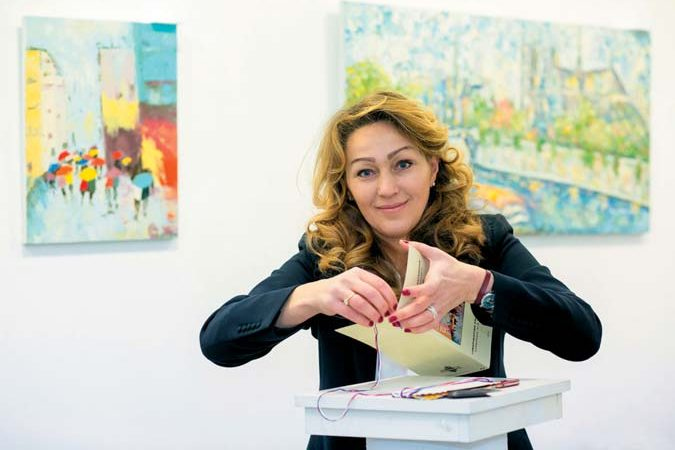
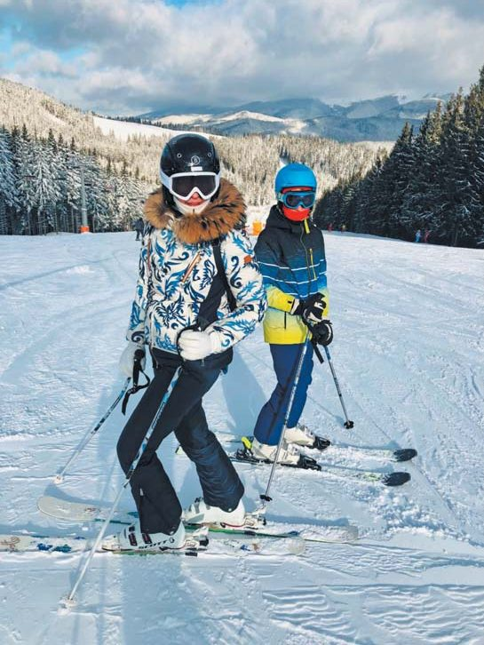
Розмовляв Сергій Радлінський. Світлини з архіву Анжеліки Якимець.